Допустим, надо нарисовать линии поверх макета по синим линиям:
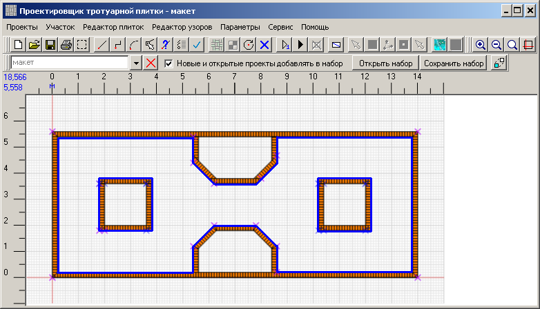
При маленьком масштабе трудно попадать мышкой в опорные точки. Если увеличить
масштаб, то концы опорной линии могут оказаться за пределами экрана и провести линию из
конца в конец не получится:
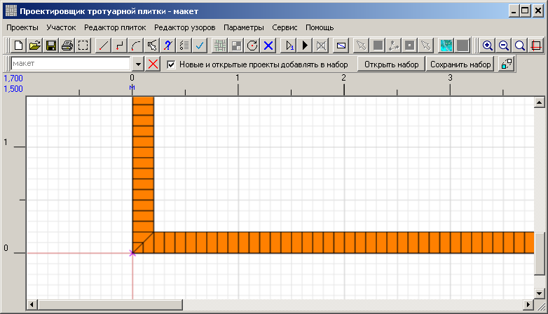
Выход есть - мини-дисплей. Нажимаем кнопку 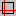 на тулбаре. На рабочем поле
появляется панель с уменьшенной копией рабочего проекта:
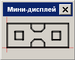
Важно предварительно установить удобные
размеры чертежа.
Если размеры чертежа будут чрезмерно большими для рабочего проекта, то мини-дисплей будет выглядеть
неинформативно:
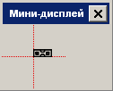
Начинаем рисовать контуры. Не забываем создать новый проект для внутреннего пространства рабочего проекта!
Выбираем инструмент "Ломаная линия" 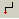. И нажимаем мышкой на мини-дисплее
в левый нижний угол (обведено красным кружком):
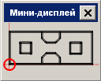
На рабочей области покажется часть проекта, соответствующая точке нажатия на мини-дисплее. Точность
позиционирования зависит от точки нажатия на мини-дисплее.
Наконец-то начинаем рисовать первую линию. Нажимаем в точку начала (на рисунке выше обведена красным
кружком). От этой точки потянется линия:
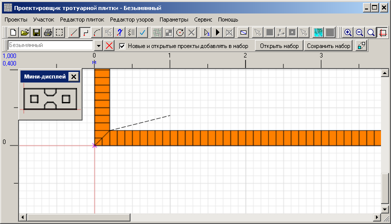
Нажимаем на мини-дисплее в точке окончания линии:
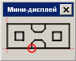
Проект сместится в рабочей области в такое положение:
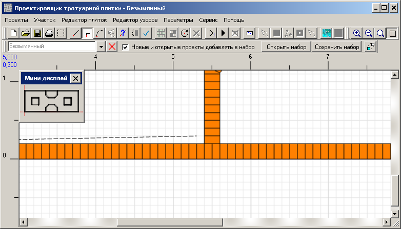
Завершаем линию. И поскольку мы рисуем ломаную линию, то в этой же точке начинается новая линия.
Нажимаем следующую точку на мини-дисплее:
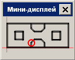
Проект сместился к нужной точке, завершаем линию.
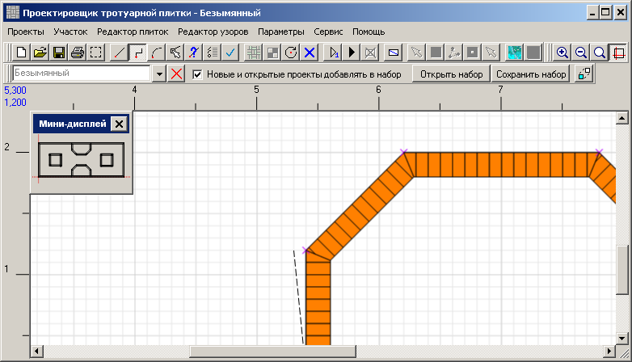
Продолжаем в том же духе для всех опорных точек контура до полного завершения.
Мини-дисплей можно перетащить в любое место рабочей области, как и любое другое окно - за заголовок.
Можно изменить его размер, как и любое другое окно - потянув за стороны или углы.
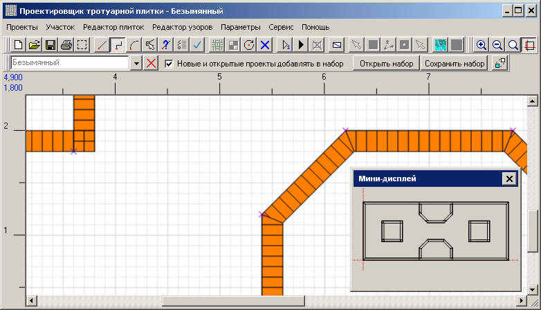